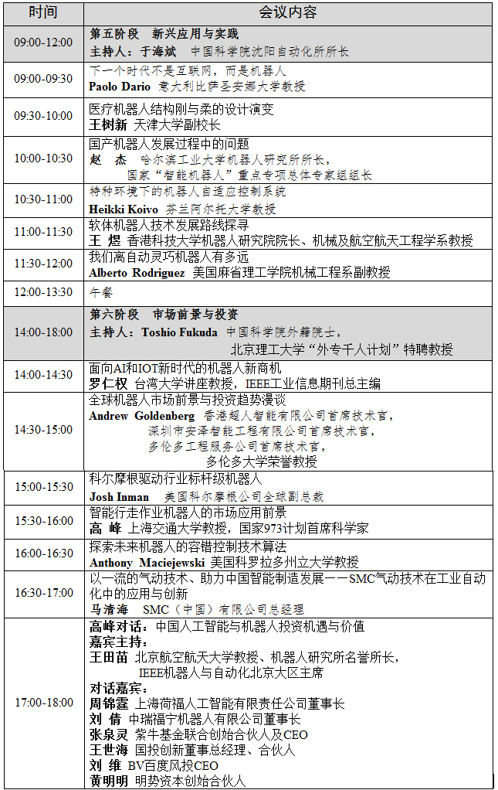
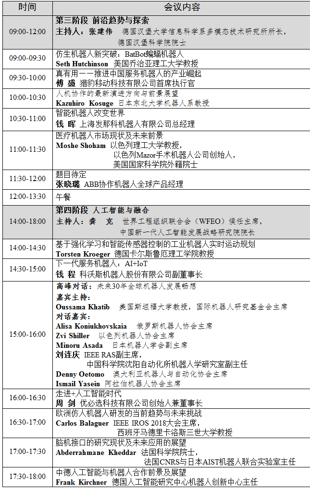

千龙网北京8月13日讯 由北京市人民政府、工业和信息化部、中国科学技术协会主办，中国电子学会、北京市经济和信息化委员会、北京经济技术开发区管委会承办的2018世界机器人大会将于8月15日至19日在北京亦创国际会展中心举行。
大会由论坛、博览会、大赛、地面无人系统活动四大板块组成。国际21家机器人组织作为大会支持机构，300多位国内外专家震撼演讲，160多家机器人企业展示最新展品及应用，16个国家4万多名参赛选手参加比赛，2018世界机器人大会将为您带来一场机器人领域的饕餮盛宴！
其中，作为大会四大板块之一的2018世界机器人论坛将大咖云集，目前确认参会的有300多位国内外嘉宾将出席大会：中国工程院院士王天然、IEEE机器人与自动化学会主席Wolfram Burgard、美国机器人工业协会主席Jeff Burnstein……几十场演讲中，中外专家、学者、企业家将在这里共同探索前沿趋势、实践新兴应用、交流市场与产业风向、共话热点话题，在基础技术和创新领域碰撞出新的火花，促进国际战略与全球合作。
论坛
2018世界机器人论坛由主论坛和相关专题论坛组成:
时间：8月16日-8月18日
地点：北京亦创国际会展中心C馆大会议厅
时间：8月17日（周五）
地点：北京亦创国际会展中心C馆大会议厅
时间：8月18日（周六）
地点：北京亦创国际会展中心C馆大会议厅
专题论坛
时间：8月15日-8月18日
地点：北京亦创国际会展中心C馆
专题论坛由北京机器人产业合作对接主题活动和机器人技术创新类、机器人行业应用类、机器人产业发展类、机器人伦理与法律类、机器人国际合作类共6个部分组成。
 第一部分：主题活动
8月17日 09:00-11:20
8月18日14:00-17:00
地点：北京亦创国际会展中心C馆 二层会议室 DE
WRC2018主题活动：北京机器人产业合作对接会
 第二部分：机器人技术创新类论坛
8月16日 09:00-18:25
WRC2018技术创新类论坛一：先进机器人与自动化学术交流专题论坛
8月16日 13:30-18:00
WRC2018技术创新类论坛二：机器人操作系统ROS专题论坛
8月18日 09:00-12:00
WRC2018技术创新类论坛三：机器人质量提升及标准化专题论坛
8月18日 09:05-12:10
WRC2018技术创新类论坛四：机器人与新一代人工智能创新专题论坛
8月18日 14:00-17:30
WRC2018技术创新类论坛五：机器人青年科学家技术创新专题论坛
第三部分：机器人行业应用类论坛
8月15日 08:50-12:00
WRC2018行业应用类论坛一：机器人公共安全行业应用专题论坛
8月16日 09:00-12:00
WRC2018行业应用类论坛二：机器人医疗行业应用专题论坛（上午）
8月16日 14:00-17:30
WRC2018行业应用类论坛二：机器人医疗行业应用专题论坛（下午）
8月16日 09:30-11:50
WRC2018行业应用类论坛三：机器人工业制造行业应用专题论坛
8月17日 14:00-17:40
WRC2018行业应用类论坛四：机器人服务行业应用专题论坛
8月18日 09:00-12:00
WRC2018行业应用类论坛五： 机器人养老行业应用专题论坛
第四部分：机器人产业发展类专题论坛
8月17日 09:00-18:00
WRC2018产业发展类论坛一：机器人教育与创客专题论坛
8月17日 08:45-12:00
WRC2018产业发展类论坛二：机器人产业与区域经济协调发展专题论坛
8月17日 13:50-18:00
WRC2018产业发展类论坛三：机器人创新创业专题论坛
8月19日 09:00-12:10
WRC2018产业发展类论坛四：机器人产业发展与投融资专题论坛
第五部分：机器人伦理与法律类专题论坛
8月18日 13:30-18:20
WRC2018伦理与法律类论坛：机器人伦理与法律专题论坛
第六部分：机器人国际合作类论坛
8月14日 09:30-12:00
WRC2018国际合作类论坛一：国际组织圆桌会议（闭门会议）
8月16日 13:30-16:30
WRC2018国际合作类论坛二：中以机器人创新合作论坛（闭门会议）
8月17日 09:00-11:00
WRC2018国际合作类论坛三：中俄机器人产业合作座谈会（闭门会议）
8月15日 09:00-11:30
WRC2018国际合作类论坛四：中国瑞典瑞士智能机器人合作论坛